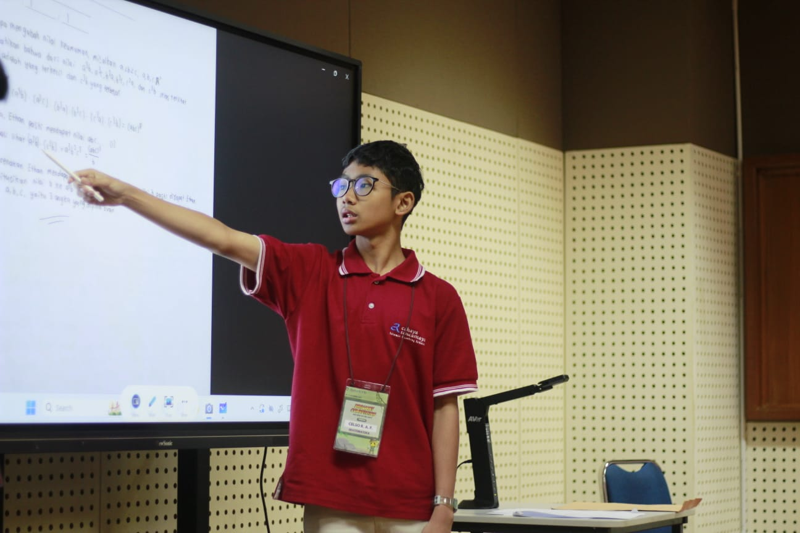
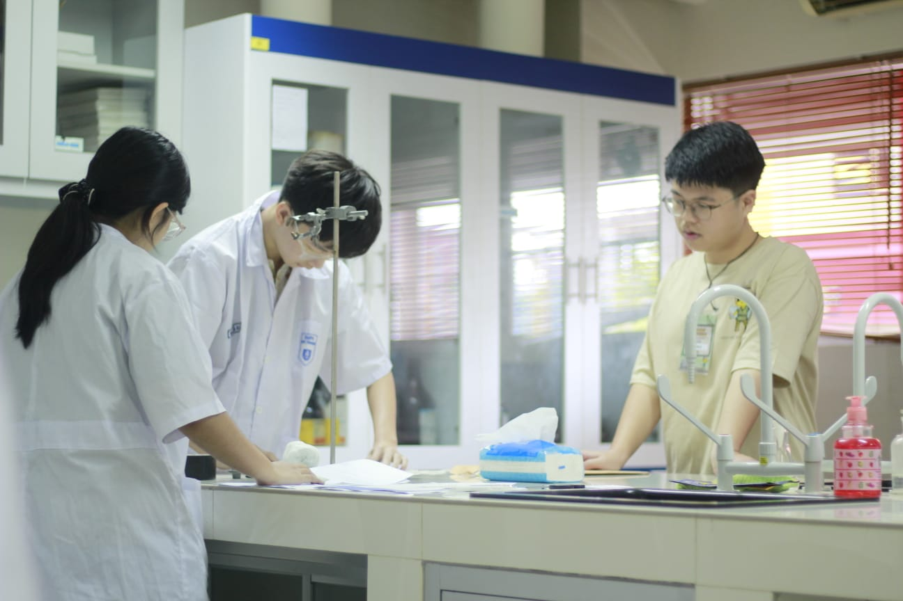

Sistem Lomba
Dua bidang, empat babak, tim maksimal dua siswa SMP kelas 7–9.

Dua bidang, empat babak, tim maksimal dua siswa SMP kelas 7–9.
24–30 September · 80% pendaftar terbaik lolos (maks. 30 tim)
15 Oktober · 90 menit · 15 tim lolos
15 Oktober · 150 menit · 5 tim lolos
16 Oktober · penentuan juara 1–5
| Periode | Tanggal | Biaya per Tim |
|---|---|---|
| Early | 22 – 31 Agustus 2026 | Rp 175.000 |
| Regular | 1 – 25 September 2026 | Rp 200.000 |

Pensil, pena, penghapus, jangka, dan penggaris lurus. Tanpa kalkulator, busur, atau alat bantu hitung apa pun. Mencari jawaban melalui internet atau bertanya kepada pihak di luar tim dilarang keras.

Peserta IPA diperkenankan menggunakan kalkulator. Kalkulator harus senyap dan bertampilan visual saja, dan memori wajib dikosongkan sebelum ujian. Tidak diizinkan: kalkulator grafik, bank data, manipulasi teks/rumus, papan ketik QWERTY, aljabar simbolik, diferensiasi/integrasi simbolik, dan komunikasi jarak jauh.
Pengawas memeriksa kalkulator sebelum ujian dimulai. Peserta bertanggung jawab atas baterai dan fungsi kalkulatornya sendiri.
Panitia berhak meloloskan lebih banyak tim dengan pertimbangan tertentu. Segala bentuk pelanggaran dan kecurangan berakibat diskualifikasi. Keputusan panitia tidak dapat diganggu gugat.